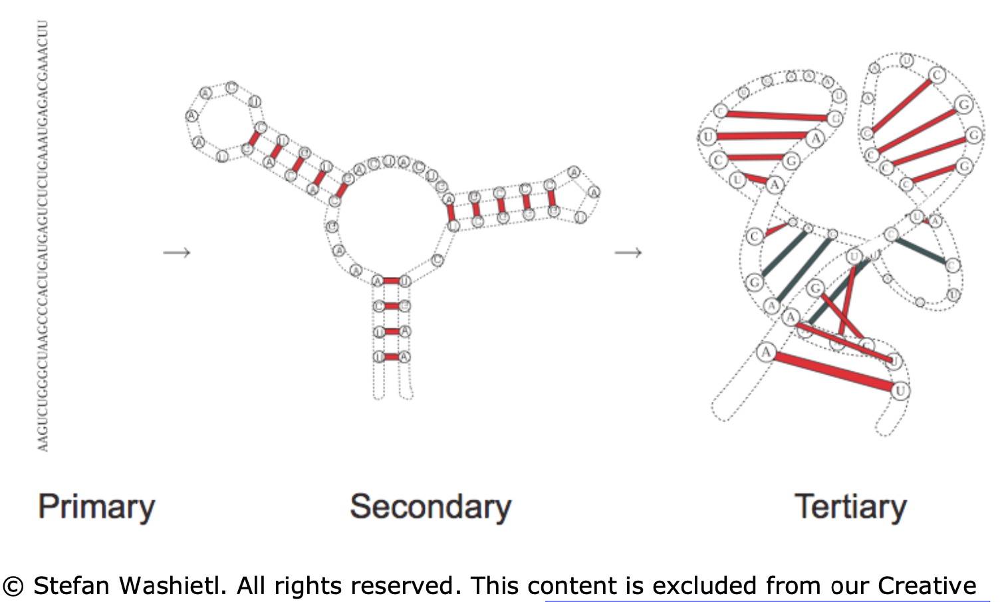
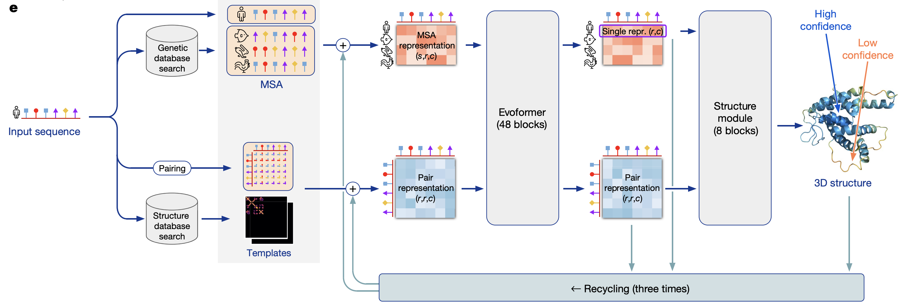

1.4. omics¶
some papers involving proteins and ml, especially predicting protein structure from dna/rna
1.4.1. overview¶
1.4.1.1. vocabulary¶
oligonucleotide = oligo = short single strands of synthetic DNA or RNA
1.4.1.2. data¶
nucleic acid database (NDB)
protein databank (PDB)
rna
~~RNABase: an annotated database of RNA structures~~ (2003) - no longer maintained
Accurate SHAPE-directed RNA structure determination | PNAS (deigan et al. 2009) - chemical probing
1.4.2. rna structure prediction¶
1.4.2.1. rna basics¶
rna does many things
certain structures of RNA lend themselves to catalytic activities
tRNA/mRNA convert DNA into proteins
RNA also serves as the information storage and replication agent in some viruses
rna components
4 bases: adenine-uracil (instead of dna’s thymine), cytosine-guanine
ribose sugar in RNA is more flexible than DNA
RNA World Hypothesis (Walter Gilbert, 1986) - suggests RNA was precursor to modern life
later dna stepped in for info storage (more stable) and proteins took over for catalyzing reactions
rna structure

primary - sequence in which the bases are aligned - relatively simple, comes from sequencing
secondary - 2d analysis of hydrogen bonds between rna parts (double-strands, hairpins, loops) - most of stabilizing free energy comes from here (unlike proteins, where tertiary is most important)
most work on “RNA folding” predicts secondary structure from primary structure
a lot of this comes from hydrogen bonds between pairs (watson-crick edge)
other parts of the pairs (e.g. the Hoogsteen- / CH-edge and the sugar edge) can also form bonds
tertiary - complete 3d structure (e.g. bends, twists)

RNA-Seq - Wikipedia - RNA-Seq uses next-generation sequencing (NGS) to reveal the presence and quantity of RNA in a biological sample at a given moment, analyzing the continuously changing cellular transcriptome
1.4.2.2. algorithms¶
computational bio book ch 10 (kellis, 2016)
2 main approaches to rna folding (i.e. predicting rna structure):
(1) thermodynamic stability of the molecule
(2) probabilistic models
note: can use evolutionary (i.e. phylogenetic) data to improve either of these
some RNA changes still result in similar structures
consistent mutations - something mutates but structure doesn’t change (e.g. AU -> G)
compensatory mutations - two mutations but structure doesn’t change (e.g. AU -> CU -> CG)
incorporate similarities to other RNAs along with something like zuker algorithm
thermodynamic stability - uses more domain knowledge
dynamic programming approach: given energy value for each pair, minimize total energy by pairing up appropriate base pairs
assumption: no crossings - given a subsequence \([i,j]\), there is either no edge connecting to the ith base (meaning it is unpaired) or there is some edge connecting the ith base to the kth base where \(i < k \leq j\) (meaning the ith base is paired to the kth base)
this induces a tree-structure to theh problem
nussinov algorithm (1978)
ignores stacking interactions between neighboring pairs (i.e. assumes there are no pseudo-knots)
zuker algorithm (1981) - includes stacking energies
probabilistic approach - uses more statistical likelihood
stochastic context-free grammer (SCFG) is like an extension of HMM that incorporates some RNA constraints (e.g. bonds must happen between pairs)
Recent advances in RNA folding - ScienceDirect (fallmann et al. 2017)
algorithmic advances
algorithmic constraints
locality - restrict maximal span of base pairs
add in bonus energies as hard or soft constraints
rna-rna and rna-protein interactions - there are different algorithms for telling how 2 things will interact
newer algorithms take into account some aspects of tertiary structure to predict secondary structure (e.g. motifs, nonstandard base pairs, pseudo-knots)
representation
...((((((((...)). .)). .((.((...)). )))))).“dot-parenthesis” notation - opening and closing represent bonded pairs
evaluation
computing alignments is non-obvious in these representations
centroids - structures with a minimum distance to all other structures in the ensemble of possible structures
consensus structures - given a good alignment of a collection of related RNA structures, can compute their consensus structure, (i.e., a set of base pairs at corresponding alignment positions)
Folding and Finding RNA Secondary Structure (matthews et al. 2010)
new work drops the assumption of no knots (e.g. crossings)
project to topology (e.g. low/high genus) - e.g. projecting to a torus can remove crossings but still allow us to use dynamic programming
RNA secondary structure prediction using deep learning with thermodynamic integration (sato et al. 2021)
RNA-folding scores learnt using a DNN are integrated together with Turner’s nearest-neighbor free energy parameters
DNN predicts scores that are fed into zuker-style dynamic programming
1.4.2.3. 3d rna structure prediction¶
startup atomic ai works on this
Geometric deep learning of RNA structure | science (townshend, …, dror 2021)
scoring model - gives energy function for (primary sequence, structure) pair
townshend is at atomic ai
Frontiers | RNA 3D Structure Prediction Using Coarse-Grained Models | Molecular Biosciences (li & chen, 2021)
older
iFoldRNA: three-dimensional RNA structure prediction and folding - PubMed (sharma et al. 2008)
1.4.3. protein structure prediction (dna)¶
1.4.3.1. protein basics¶
the standard way to obtain the 3D structure of a protein is X-ray crystallography
takes ~1 year & $120k to obtain the structure of a single protein through X-ray crystallography (source)
on average, a protein is composed of 300 amino acids (residues)
21 amino acid types
the first residue is fixed
proteins evolved via mutations (e.g. additions, substitutions)
fitness selects the best one
1.4.3.2. algorithm basics¶
multiple-sequence-alignment (MSA) - alignment of 3 or more amino acid (or nucleic acid) sequences, which show conserved regions within a protein family which are of structural and functional importance
matrix is (n_proteins x n_amino_acids)
independent model (PSSM) - model likelihood for each column independently
pairwise sites (potts model) - model likelihood for pairs of positions
prediction problems
contact prediction - binary map for physical contacts in the final protein
common to predict this, evaluation uses binary metrics
Evaluating Protein Transfer Learning with TAPE - given embeddings, 5 tasks to measure downstream performance (rao et al. 2019)
tasks: structure (SS + contact), evolutionary (homology), engineering (fluorescence + stability)
future: interactions between molecules (e.g. protein-protein, environment, highly designed proteins)
1.4.3.3. deep-learning papers¶
De novo protein design by deep network hallucination | Nature (anishchenko…baker, 2021)
deep networks trained to predict native protein structures from their sequences can be inverted to design new proteins
Highly accurate protein structure prediction with AlphaFold | Nature (jumper, …, hassabis, 2021)
model overview

preprocessing
MSA
finding templates - find similar proteins to model “pairs of residues” - which residues are likely to interact with each other
evoformer
uses attention on graph network
iterative
structure model - converts msa/pair representations into set of (x,y,z) coordinates
“invariant point attention” - invariance to translations and rotations
MSA Transformer (rao et al. 2021) - predicts contact prediction
train via masking
output (contact prediction) is just linear combination of attention heads finetuned on relatively little data
some architecture tricks
attention is axial - applied to rows / columns rather than entire input
1.4.3.4. covid¶
The Coronavirus Nucleocapsid Is a Multifunctional Protein (mcbride et al. 2014)
coronavirus nucleocapsid = N protein
1.4.4. TIPs - using viruses for treatment¶
videos
2 issues
mutation - viruses mutate, our drugs don’t
transmission - adherence / deployment - hard to give certain the drugs
solution: use modified versions of viruses as treatment
therapeutic interfering particles or TIPs are engineered deletion mutants designed to piggyback on a virus and deprive the virus of replication material
TIP is like a parasite of the virus - it clips off some of the virus DNA (via genetic engineering)
it doesn’t contain the code for replication, just for getting into the cell
since it’s shorter, it’s made more efficiently - thus it outcompetes the virus
how do TIPs spread?
mutations happen because the “copy machine” within a cell makes a particular mutation
when a new virus comes along, it makes some of the mutated parts
TIPs can’t replicate, so they take some of the mutated parts made by the new virus
then, the TIP gets copied with the same mutation as the virus and this now spreads
effect
viral load will immediately be lower
superspreaders can spread treatment to others
Identification of a therapeutic interfering particle—A single-dose SARS-CoV-2 antiviral intervention with a high barrier to resistance (chaturvedi…weinberger, 2021)
DIP = defective interfering particle = wild-type virus
single administration of TIP RNA inhibits SARS-CoV-2 sustainably in continuous cultures
in hamsters, both prophylactic and therapeutic intranasal administration of lipid-nanoparticle TIPs durably suppressed SARS-CoV-2 by 100-fold in the lungs, reduced pro-inflammatory cytokine expression, and prevented severe pulmonary edema
TIP consists 1k - 2k bases
hard to actually look at structure here (requires cryoEM)